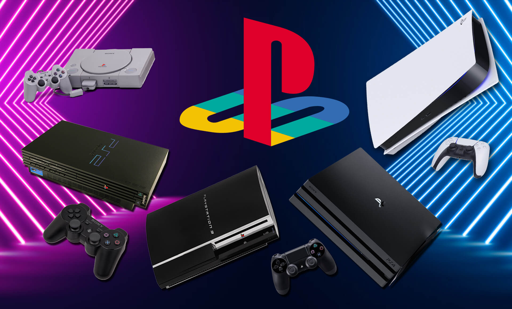
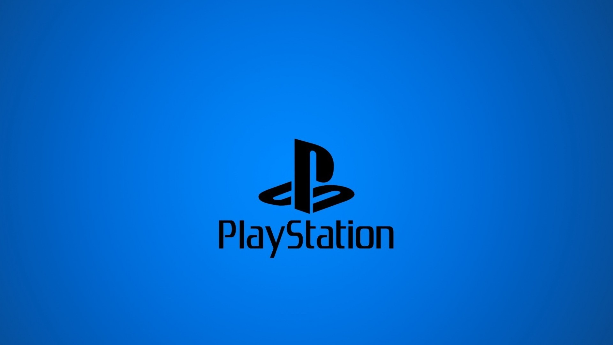
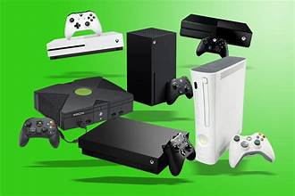

Teodore
Ratiani
Tbilisi
I am 15 years old.
I am student of GOA academy.
Goa is the best academy in the world.
Hello i am Tedo
I am GOA student.
today lets talk about consoles
first is playstation
PlayStation (Japanese: プレイステーション, Hepburn: Pureisutēshon, officially abbreviated as PS) is a video gaming brand that consists of five home video game consoles, two handhelds, a media center, and a smartphone, as well as an online service and multiple magazines. The brand is produced by Sony Interactive Entertainment, a division of Sony.
The first PlayStation console was released in Japan in December 1994, and worldwide the following year.[1] The original console in the series was the first console of any type to ship over 100 million units, doing so in under a decade.[2] Its successor, the PlayStation 2, was released in 2000; it is the best-selling home console to date, having reached over 155 million units sold by the end of 2012.[3] Sony's next console, the PlayStation 3, was released in 2006, selling over 87.4 million units by March 2017.[4] Sony's next console, the PlayStation 4, was released in 2013, selling a million units within a day, becoming the fastest selling console in history.[5] The latest console in the series, the PlayStation 5, was released in 2020[6] and sold 10 million units in its first 249 days, unseating its predecessor as the fastest-selling PlayStation console to-date.[7] The main series of controllers utilized by the PlayStation series is the DualShock, a line of vibration-feedback gamepads that sold 28 million units by June 2008.[8]
The first handheld console in the series, the PlayStation Portable (PSP), sold a total of 80 million units worldwide by November 2013.[9] Its successor, the PlayStation Vita (PSVita), which launched in Japan in December 2011 and in most other major territories in February 2012, sold over four million units by January 2013.[10] PlayStation TV is a microconsole and a non-portable variant of the PlayStation Vita handheld game console.[11] Other hardware released as part of the PlayStation series includes the PSX, a digital video recorder which was integrated with the PlayStation and PlayStation 2, though it was short-lived due to its high price and was never released outside Japan, as well as a Bravia television set which has an integrated PlayStation 2.
The PlayStation Network is an online service with about 110 million registered users[12] (as of June 2013) and over 103 million active users monthly.[13] (as of December 2019) It comprises an online virtual market, the PlayStation Store, which allows the purchase and download of games and various forms of multimedia, a subscription-based online service known as PlayStation Plus and a social gaming networking service called PlayStation Home, which had over 41 million users worldwide at the time of its closure in March 2015.[14] PlayStation Mobile (formerly PlayStation Suite) is a software framework that provides PlayStation content on mobile devices. Version 1.xx supports both PlayStation Vita, PlayStation TV and certain devices that run the Android operating system, whereas version 2.00 released in 2014 only targeted PlayStation Vita and PlayStation TV.[15] Content set to be released under the framework consist of only original PlayStation games currently.[16]
Seventh generation PlayStation products also use the XrossMediaBar, which is an Technology & Engineering Emmy Award–winning graphical user interface.[17] A touch screen-based user interface called LiveArea was launched for the PlayStation Vita, which integrates social networking elements into the interface. Additionally, the PlayStation 2 and PlayStation 3 consoles also featured support for Linux-based operating systems; Linux for PlayStation 2 and OtherOS respectively, though this has since been discontinued. The series has also been known for its numerous marketing campaigns, the latest of which being the "Greatness Awaits" and eventually, "Play Has No Limits" commercials in the United States.
IF you are bored to leave
there is also xbox 
for more information
Xbox is a video gaming brand that consists of five home video game consoles, as well as applications (games), streaming service Xbox Cloud Gaming, and online services such as the Xbox network and Xbox Game Pass. The brand is produced by Microsoft Gaming, a division of Microsoft.
The brand was first introduced in the United States in November 2001, with the launch of the original Xbox console. The Xbox branding was formerly, from 2012 to 2015, used as Microsoft's digital media entertainment brand replacing Zune.[1][2] In 2022, Microsoft expanded its gaming business and reorganized Xbox to become part of its newly formed Microsoft Gaming division. Under Microsoft Gaming, Xbox's first-party publishers are Xbox Game Studios, ZeniMax Media (Bethesda Softworks), and Activision Blizzard (Activision, Blizzard Entertainment, and King), who own numerous studios and successful franchises.
for more image